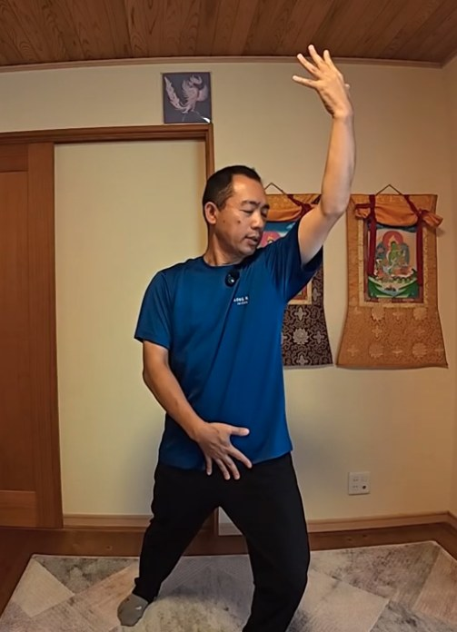
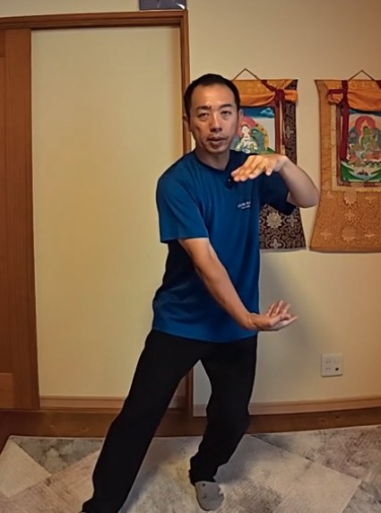
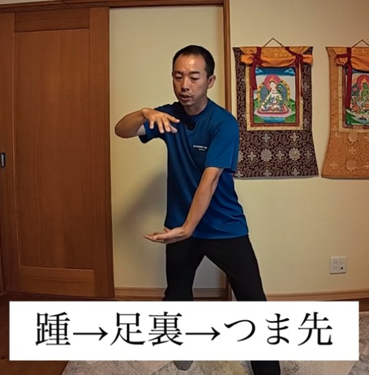
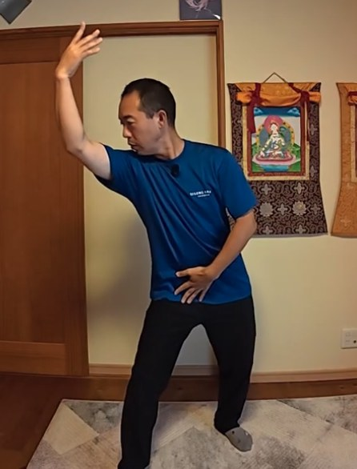
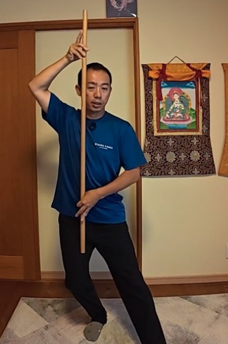
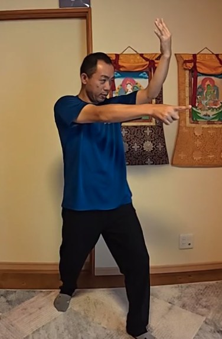
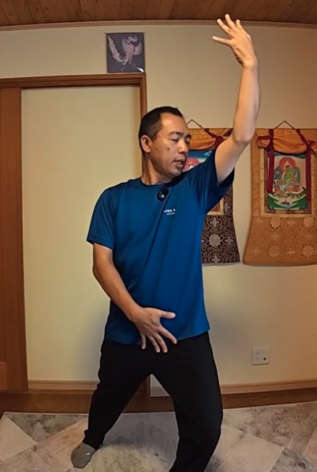
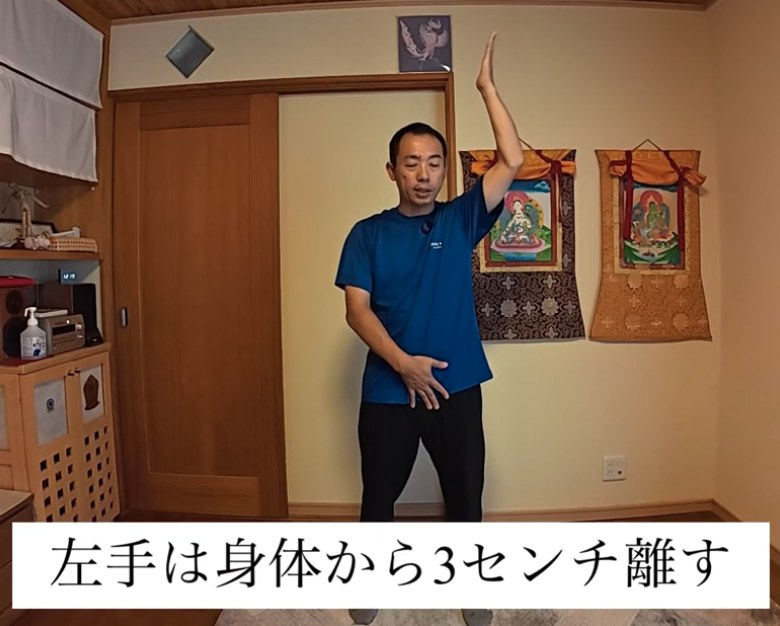
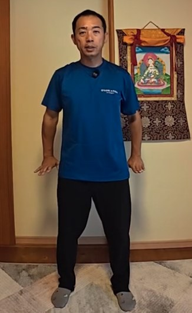

氣功ビデオ講座 8月号
天と繋がる、天地を繋ぐ その3
これまでの3つのルートを土台に、いよいよ天と繋がる。
氣のボールを抱えて、天の氣を取り入れる動きを、動画でていねいに学びます。
- 形式動画講座
- 収録時間約27分
- 準備立てるスペース
前回までの講座： 3月号（立ち方） ／ 4月号（補と瀉） ／ 5月号（補と瀉 応用編） ／ 6月号（体内のルート作り） ／ 7月号（中脈とトーラス）

こんなこと、ありませんか？
- 氣功の動きの意味を、知りたい
- 手や足の動きは分かるけれど、氣を取り入れる形に迷っている
- 足を出すと、体が流れて傾いてしまう
- 天と繋がる感覚を、体で確かめたい
氣功は、軸をまっすぐに保ち、力を抜いて行うもの。天の氣を取り入れる形にも、そのコツが詰まっています。
8月号の考え方
天と繋がるとは、
宇宙の情報を、自分の中に通すこと
氣功でいう天は、宇宙を表しています。宇宙の中に地球があり、その地球の中に人間がいる。根本的には、人間も宇宙からできています。
宇宙の情報は、いくらでも雑多にあります。そこで、手を上下に分けます。上の手で天から氣を取り入れ、下の手は丹田にあてて、余計なものを地球に流す。自分に必要な情報だけを取るための形です。
これまでの3つのルート（指先から肩、天から丹田、足の中）は、すべて、天と繋がるための準備でした。感じ方には個人差があります。
この講座で学ぶこと
6つのステップで、
天の氣を取り入れます
-
1
氣のボールを抱えて、手の上下を入れ替える
最初に抱える氣のボールは、宇宙を表す「太極」を手の中に持っている状態です。足を斜め前に出しながら、氣のボールを転がすように手の上下が入れ替わり、さらに上下に分かれていきます。

手の上下が入れ替わり、分かれていく -
2
足は、踵から柔らかくつく
斜め前に出した足は、踵→足裏→つま先の順に、ゆっくりついていきます。一気にべたっとつくと、足に力が入って、地球との繋がりが弱くなってしまいます。

踵→足裏→つま先 -
3
軸をまっすぐに保って動く
体の中に1本の棒が立っているように、足を出しても軸が折れたり斜めになったりしないように動きます。顎を引くことも大切です。体が流れる形と、軸がまっすぐな形を、見比べて確認できます。

NG：体が斜めに流れる 
OK：軸がまっすぐ -
4
おでこ・おへそ・つま先を、同じ方向に
形をとるとき、おでこ、おへそ、足のつま先が同じ方向を向くようにします。少し斜めでも構いませんが、体が横を向いてしまうのは避けます。

つま先の方向に、体を向ける -
5
天の氣を取り入れる
下の手は丹田に、上の手はおでこの方へ。目を閉じ、手のひらを小さく左右に動かすと、目の奥に感触や光を感じることがあります。直感力を上げたいときの手の形も、動画でご紹介します。

上の手で天の氣を取り入れる -
6
氣を下ろして、手を戻す
足を戻し、手を体から3cmほど離して降ろしていきます。丹田から帯脈へ、手のひらは床と平行のまま、氣を下へ。最後に指先が下におります。止めずに、流れるように行います。

手は、体から3cm離す 
最後に、指先が下におりる
この講座の特長
「軸と足のつき方」を、動画で確かめる
NGと正しい形を見比べられる
体が斜めに流れる形と、軸がまっすぐな形。違いを並べて確かめられます。
足のつき方まで、ていねいに
踵から、足裏、つま先へ。足のつき方で、地球との繋がりの感覚が変わることを体感できます。
左右、鏡、背中向きでくり返せる
動画の最後には、鏡の動きや背中向きでの練習もあります。自分の左右を確かめながら練習できます。
言葉で言うより、やるのが難しい。
だから、動画で何度も確かめる。
講師
神田 一郎（かんだ いちろう）
富士山のふもとで、氣功を教えています。リハビリの現場での経験と、ご自身の体と向き合ってきた歩みを土台に、「なんでもOK、オールOK」の気持ちで、無理なく続けられる氣功をお伝えしています。
この講座でも、うまくできているかどうかを気にするより、まずは自分の体の小さな変化に気づくことを大切にしています。
講座の概要
- 講座名
- 氣功ビデオ講座 8月号「天地を繋ぐ その3」
- 形式
- 動画講座（講師が実演しながら解説）
- 収録時間
- 約27分
- 内容
- 天と繋がるとは／氣のボールと太極／足のつき方（踵から）／軸をまっすぐに保つ／天の氣を取り入れる形／氣を下ろして手を戻す／左右・鏡・背中向きでの練習
- 準備するもの
- 動画を見ながら立てる広さ
- 価格
- 8,800円（税込）
- 視聴方法
- Vimeo（お支払い完了後、いつでもご視聴いただけます）
- お支払い
- PayPal
氣功ビデオ講座シリーズ
段階を踏んで、少しずつ深めていく
月ごとに、内容がつながっていくシリーズです。8月号は、いよいよ天と繋がる回です。
よくあるご質問
3月号〜7月号を見ていなくても受講できますか？
受講できます。ただ、8月号は、立ち方（3月号）、補と瀉（4月号・5月号）、体内のルート作り（6月号）、体の中心の氣の流れ（7月号）の上に、天と繋がる動きを重ねていく内容です。質を高めたい方は、3月号、4月号、5月号、6月号、7月号から順にご覧いただくのがおすすめです。
氣功が初めてでも大丈夫ですか？
はい。ただ、シリーズの途中の内容にあたるため、初めての方は3月号から始めるのがおすすめです。
準備するものはありますか？
動画を見ながら立てるスペースがあれば大丈夫です。
購入後は、どうやって視聴しますか？
お支払い完了後、いつでもVimeoでご視聴いただけます。
どんな効果がありますか？
体の感じ方には個人差があります。この講座は、体の使い方を学ぶ内容であり、医療行為や、病気の診断・治療を目的としたものではありません。体調に不安がある方は、無理をせず、医師にご相談ください。